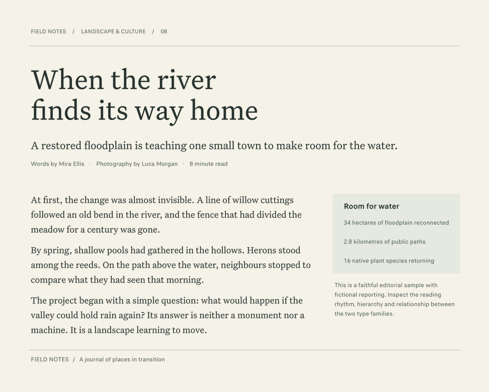
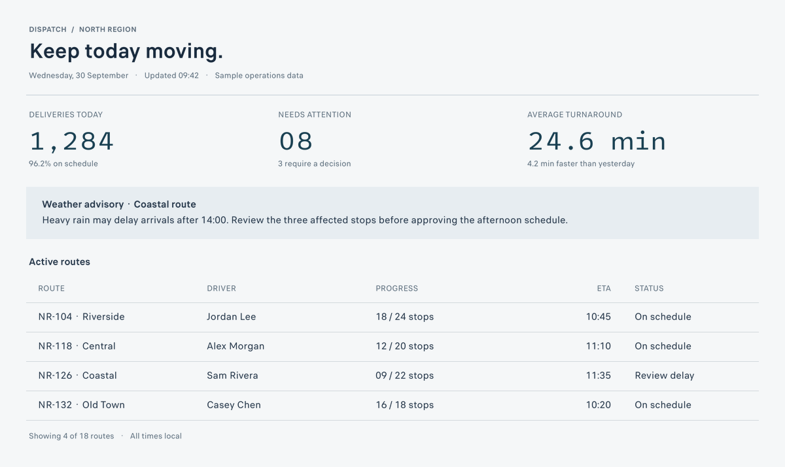
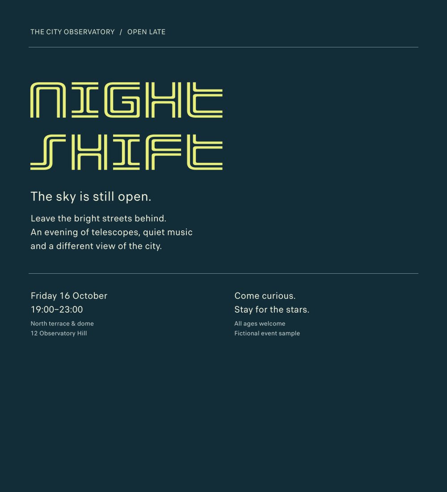

Open minds. More type.
Find a different
kind of character.
A working directory of open and commercial fonts. Explore a direction, compare the details, and keep the choices that fit your work.
Your shortlist stays in this browser
Search matches directory metadata, not visual similarity.
Previews load only when you ask.
Directory metadata is a starting point. Check the provider’s current styles, language coverage and terms before use.
Beyond the specimen
See the choice in the work.
Actual local-toolkit outputs.
Fictional sample content.






Examples demonstrate composition capabilities; they are not recommendations or licenses. Editable specs ↗ · Recorded browser checks ↗
For the work that follows
Take the search into your project.
Bring your own fonts.
The Python CLI indexes authorized local files, inspects exact styles, and renders real project text. Start with your own collection; a full corpus is optional.
Local font setup ↗Explore by letterform.
Optional local FontCLIP retrieval searches rendered fonts from a description or typography crop. It reports coverage and does not download model weights during search.
Visual retrieval setup ↗Give your agent the tools.
JSON CLI and stdio MCP share discovery, family inspection, exact asset resolution, and contextual compositions. Export a shortlist above to carry your direction forward.
Connect through MCP ↗Evidence, kept in view
A directory is a beginning.
A decision needs context.
This web directory contains family metadata, with optional Google-hosted previews and provider links. The separate recorded v0.2 local catalog contains 27,520 faces, 8,041 distinct family names and 8,710 family groups.
In three held-out cases, the local harness did not improve final compositions over basic access to the same fonts. Visual references helped in a separate development study. Inspect the work and make the final call.